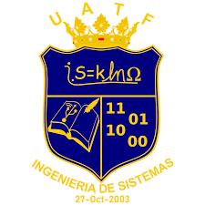

CARRERA DE INGENIERIA DE SISTEMAS
| Nro | Docente | Materias | Horas |
|---|---|---|---|
| 1 | Pacheco Álvarez Kary | LIN140 | 17 |
| 2 | Colque Caballero Sabino | MAT100, MAT101, MAT204, SIS443 | 12 |
| 3 | Camacho Ocsachoque Nelly | MAT102, MAT206 | 10 |
| 4 | Bravo Villafuerte Clever | SIS110, SIS211 | 17 |
| 5 | Choque Matos Javier | SIS141, SIS313 | 20 |
| 6 | Choque Mamani Porfirio | MAT101 | 15 |
| 7 | Borja Mamani Raquel | MAT102 | 12 |
| 8 | López Quentasi Jesús | SIS110 | 17 |
| 9 | Puita Choque Gustavo | SIS141 | 15 |
| 10 | Huayllas García Juana | LIN140 | 12 |
| 11 | Huarachi Mamani Lidia | MAT102 | 14 |
| 12 | Terrazas Quispe Wilfredo | SIS110 | 12 |
| 13 | Sánchez Pérez Karina | SIS141 | 13 |
| 14 | Ortega Reyes Efraín | MAT102 | 14 |
| 15 | Mamani Huanaco Elías | FIS205 | 15 |
| 16 | Pozo Hidalgo Ruth | MAT203 | 17 |
| 17 | Velarde Flores Kimberly | SIS230 | 17 |
| 18 | Ramos Castro Roberto | FIS205 | 12 |
| 19 | Castro Angulo Ditmar | SIS211 | 12 |
| 20 | Humérez Martínez David | SIS312 | 17 |
| 21 | Choque Gutiérrez Juan | SIS342 | 14 |
| 22 | Mamani Figueroa José | SIS313 | 13 |
| 23 | Mercado Algarañaz Anny | SIS416 | 15 |
| 24 | Choque Mamani Eduardo | SIS420 | 13 |
| 25 | Claure Sempértegui Jenny | SIS517 | 12 |
| 26 | Durán Miranda Javier | SIS523 | 12 |
| 27 | Apaza Surculento Óscar | SIS633 | 12 |
| 28 | Ruiz Molina Limber | SIS736 | 12 |
| Nro | Sigla | Nombre | 1 | LIN140 | Inglés Técnico |
|---|---|---|
| 2 | MAT100 | Álgebra |
| 3 | MAT101 | Cálculo I |
| 4 | MAT102 | Estadística I |
| 5 | SIS110 | Programación I |
| 6 | SIS141 | Computación Básica |
| 7 | FIS205 | Física I |
| 8 | MAT203 | Álgebra Lineal |
| 9 | MAT204 | Cálculo II |
| 10 | MAT206 | Estadística II |
| 11 | SIS211 | Programación II |
| 12 | SIS230 | Sistemas Contables |
| 13 | FIS308 | Física II |
| 14 | MAT307 | Cálculo III |
| 15 | SIS312 | Estructura de Datos |
| 16 | SIS313 | Programación Gráfica |
| 17 | SIS331 | Modelos Administrativos |
| 18 | SIS342 | Análisis Discreto |
| 19 | SIS414 | Tecnologías Emergentes |
| 20 | SIS415 | Base de Datos |
| 21 | SIS416 | Análisis de Sistemas I |
| 22 | SIS420 | Sistemas Digitales |
| 23 | SIS421 | Electrónica |
| 24 | SIS443 | Investigación Operativa I |
| 25 | SIS517 | Análisis de Sistemas II |
| 26 | SIS518 | Taller BD |
| 27 | SIS522 | Arquitectura |
| 28 | SIS523 | Redes I |
| 29 | SIS532 | Sistemas Operativos |
| 30 | SIS544 | Investigación II |
| 31 | SIS624 | Servidores |
| 32 | SIS625 | Taller Redes |
| 33 | SIS633 | Ingeniería Sistemas |
| 34 | SIS634 | Economía |
| 35 | SIS645 | Simulación |
| 36 | SIS646 | Software |
| 37 | SIS710 | Dinámica |
| 38 | SIS719 | Seminario |
| 39 | SIS735 | Auditoría |
| 40 | SIS736 | Proyectos |
| 41 | SIS737 | Seguridad |
| 42 | SIS747 | Metodología |
| 43 | SIS838 | Calidad |
| 44 | SIS848 | Práctica |
| 45 | SIS849 | Taller I |
| 46 | SIS939 | Forense |
| 47 | SIS940 | Taller II |
| 48 | OPT001 | Distribuidos |
| 49 | OPT004 | Criptografía |
| 50 | OPT005 | Robótica |
| 51 | OPT015 | Ética |
| Materia | Auxiliar |
|---|
| Materia | Auxiliar |
|---|---|
| LIN140 | Juan Pérez |
| MAT100 | Ana Quispe |
| MAT101 | Carlos Mamani |
| MAT102 | Lucía Condori |
| SIS110 | Diego Flores |
| SIS141 | María Choque |
| FIS205 | Kevin Apaza |
| MAT203 | Sofía Ramos |
| MAT204 | José Cruz |
| MAT206 | Paola Vargas |
| SIS211 | Brayan López |
| SIS230 | Gabriela Ortiz |
| FIS308 | Fernando Rojas |
| MAT307 | Daniela Vega |
| SIS312 | Ricardo Herrera |
| SIS313 | Vanessa Aguilar |
| SIS331 | Jhonny Salazar |
| SIS342 | Erika Paredes |
| SIS414 | Marco Delgado |
| SIS415 | Natalia Medina |
| SIS416 | Luis Fernández |
| SIS420 | Andrea Pinto |
| SIS421 | Roberto Castillo |
| SIS443 | Claudia Herrera |
| SIS517 | Javier Morales |
| SIS518 | Camila Núñez |
| SIS522 | Eduardo Sánchez |
| SIS523 | Iván Torres |
| SIS532 | Patricia Ríos |
| SIS544 | Oscar Vargas |
| SIS624 | Daniel Quisbert |
| SIS625 | Raúl Mendoza |
| SIS633 | Alberto Chávez |
| SIS634 | Verónica León |
| SIS645 | Henry Cárdenas |
| SIS646 | Rosa Méndez |
| SIS710 | Julio Gutiérrez |
| SIS719 | Milton Rojas |
| SIS735 | Karina Poma |
| SIS736 | Elena Rocha |
| SIS737 | David Salinas |
| SIS747 | Paula Arce |
| SIS838 | Gustavo Romero |
| SIS848 | Luciano Flores |
| SIS849 | Andrea López |
| SIS939 | Cristian Vargas |
| SIS940 | Mario Aguilar |
| OPT001 | Diego Núñez |
| OPT004 | Camilo Pérez |
| OPT005 | Fernanda Rojas |
| OPT015 | Sandra Choque |